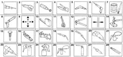
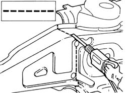
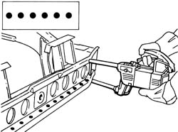
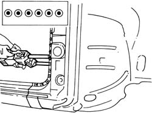
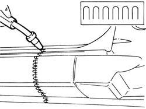
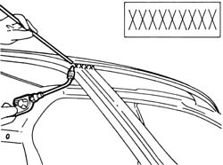
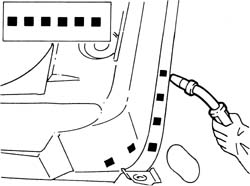
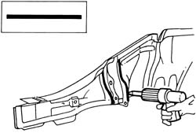

Introduction - REMOVING REFITTING
- Path
- Procedures > 72 PANELS AND FRAME > 7210 REMOVING REFITTING > Introduction - REMOVING REFITTING
- Kind
- repair procedure (removal / refitting; the operation number is the code)
- Applies to
- all engines; all production periods
- Interactive page
- https://sloeber94.github.io/elrnDB-a156/en/#/3239548
Applies to: all engines; all production periods
The graphic index and the description of the symbols appearing in the repair procedures are given below.
SYMBOLS
.

1 - Cut with hack-sawing machine 2 - Cut with circular saw 3 - Clean with rotary brush 4- Remove spot welds with spot weld remover 5 - Remove spot welds with spot weld remover Drilling for MIG welding 6 - Prepare panel using chisel Drilling for MIG welding 7 - Apply electroweldable protective coating 8 - Apply high-thickness electroweldable protective coating 9 - Locate components 10 - Measure 11 - Secure components 12 - Secure threaded rivets 13 - Check openings are aligned 14 - Straighten edges using a profiled stake and hammer 15 - Remove weld spots with chisel and hammer 16 - Remove treatment with pneumatic knife 17 - Spot welding 18 - MIG welding 19 - Welding with oxyacetylene torch 20 - Grinding 21 - Apply rustproofings 22 - Apply sealants 23 - Apply underbody protective coatings 24 - Apply paints 25 - Apply wax-based protection 26 - Apply foam products 27 - Heat with warm air28 - Remove cut edges
PROCESSING SYMBOLS
The symbols are given below of the work tasks which are described in the repair procedures with an example of application. In the descriptions of the procedures, beside the progressive number of the steps of the procedure relating to welding tasks, there may be numbers in brackets which indicate the number of spot welds to be made or to be filled by MIG welding.
Cut made by hack saw or pneumatic chisel

Spot welding

Spot welding (three panels)

Continuous - sectional MIG welding

Brazing

MIG fill welding

Sealing
